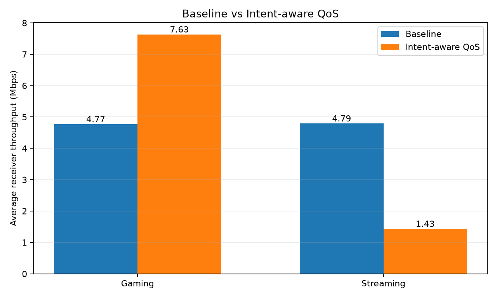

Select Your User Intent
Experiment Overview

Current Selection
Video Call
Preview only; selection is not applied to Linux QoS.
Not applied. This action targets veth-test only.
Live Network Simulation
Network performance metrics over time.
Latency
Milliseconds (ms)Throughput
Megabits per second (Mbps)Jitter
Milliseconds (ms)Packet Loss
Percent (%)Updating metrics...
51-Run User-Intent QoS Experiment
Separate experiment dataset: 3 baseline runs and 48 adaptive runs. Source: combined_qos_results.csv.
Loading experiment data…
Average metrics for selected runs
Metric comparison
Run history
| Type | Intent | Condition | Run | Interactive Mbps | Streaming Mbps | Bulk Mbps | Avg latency ms | Jitter ms | Loss % | Fairness |
|---|
Local isolated WSL experiment only. Results do not establish real broadband performance. Baseline contains only 3 runs; adaptive conditions have 3 repetitions each.
Baseline vs Adaptive Results
Average receiver throughput from three concurrent trials.
Interpretation
The tested configuration allocated more bandwidth to gaming and less to streaming. These are preliminary results; shaping conditions may not be perfectly comparable, and throughput alone does not prove lower gaming latency.
Gaming throughput
4.77 → 7.63 Mbps
Approximately +60%
Baseline → Adaptive
Streaming throughput
4.79 → 1.43 Mbps
Approximately −70%
Baseline → Adaptive
Experiment scope
3 trials
Concurrent traffic tests
Isolated WSL virtual network
Interpretation & limitations
In these tests, the configured adaptive policy prioritized gaming traffic over streaming traffic.
- Preliminary results from an isolated WSL virtual network; not proof of real broadband performance.
- Higher gaming throughput does not establish lower latency or jitter.
- Test conditions and shaping ceilings may not have been perfectly comparable.
- The traffic classifier was trained on synthetic data and has not been validated on real traffic.
Network Metrics
Metric source and measurement scope.
These throughput figures come from saved iperf3 experiments. They are not live measurements of latency, jitter, packet loss, or Internet speed.
Policy Details
Choose an intent on the Dashboard to preview its bandwidth allocation.
Video Call priority
Enforcement status
Preview onlyThis HTML page does not run sudo or modify tc rules. The existing Python engine and isolated veth-test interface remain separate from this frontend.
🧠 Machine Learning Model
Traffic prediction using the trained Random Forest classifier.
Class Probabilities
Probability assigned to each possible traffic class.
Prediction not yet requested.
Model Input Metrics
Input metrics will appear here.
Model Information & Limitations
Confidence is the model's highest predicted class probability, not its measured real-world accuracy. Input metrics are generated within the training dataset ranges. Predictions are not yet validated on real-world traffic.
About This Prototype
This project demonstrates user-intent-based bandwidth policy selection using a Linux traffic-control test setup.
Implemented components
- User selects Video Call, Gaming, Streaming, or Download.
- Python policy engine adjusts bandwidth allocation based on intent and a heuristic congestion level.
- Linux HTB shaping and a test-port filter operate on the isolated WSL interface.
- Random Forest classifier predicts traffic class using synthetic training data.
Limitations
- Experiments use a virtual test network, not a real broadband deployment.
- ML predictions are not validated on real-world traffic.
- Port-based classification is limited.
- Throughput gains do not establish lower latency or jitter.
- Automatic rollback and comprehensive fairness validation remain incomplete.